Detect drift
Rank shared nodes using representation shift and include newly introduced sensors.
CONTINUAL TRAFFIC FORECASTING · EVOLVING SENSOR NETWORKS
Continual memory for traffic systems that evolve over time.
Traffic sensor networks evolve as sensors are added, removed, and shifted. CoMemNet is a continual-learning framework that reuses compact temporal states while selectively adapting to the nodes that changed. Its prediction backbone is adjacency-free; topology is used only to expand the selected local update set when required.
Across three real multi-period PeMS datasets, CoMemNet maintains strong 15-, 30-, and 60-minute forecasts with bounded shared-node updates, yielding efficient adaptation as the network grows.
Open data release. We release the processed evolving-network datasets PEMSD4(L) and PEMSD8(M), with documentation, through the Dataset link.
CoMemNet tracks distributional change between online and EMA target representations, updates only the affected part of a changing graph, and retains adaptive temporal state for the next period.
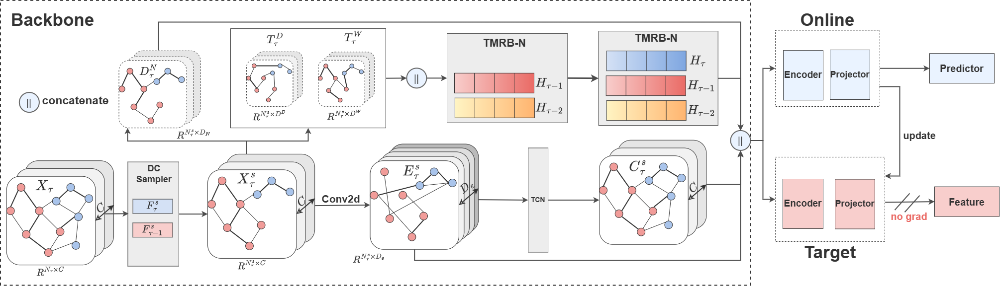
Rank shared nodes using representation shift and include newly introduced sensors.
Optionally expand selected sensors to a bounded topology neighborhood.
Reuse node-adaptive temporal memory instead of loading full historical sequences.
Annual-average metrics from the revision manuscript. Select a benchmark to inspect reported methods at 15-, 30-, and 60-minute horizons.
| Protocol | Model | 15 min MAE / RMSE / MAPE | 30 min MAE / RMSE / MAPE | 60 min MAE / RMSE / MAPE | Running time Total / avg. (s) |
|---|
Values from the revision manuscript. Bold indicates the best value; lower errors are better.
Two controlled studies isolate the effects of drift-aware updates and node-adaptive temporal memory replay. Values are annual-average 60-minute metrics.
New nodes and drift-sensitive shared nodes are both necessary for efficient adaptation.
| Variant | MAE | RMSE | MAPE |
|---|
Compact temporal-state reuse and informed node selection improve the complete model.
| Variant | MAE | RMSE | MAPE |
|---|
The revision study further evaluates historical retention, scaling behavior, robustness, and the update budget.
| Method | Current MAE | AIP | BWT | Forgetting |
|---|---|---|---|---|
| Full CoMemNet | 13.706 | 31.652 | −28.015 | 24.013 |
| No-replay | 14.419 | 30.324 | −24.199 | 20.742 |
| No-TMRB-N | 14.863 | 30.955 | −26.091 | 22.364 |
| CoMemNet-retrained | 13.910 | 32.073 | −28.720 | 24.617 |
Lower AIP and Forgetting are better; larger BWT is better.
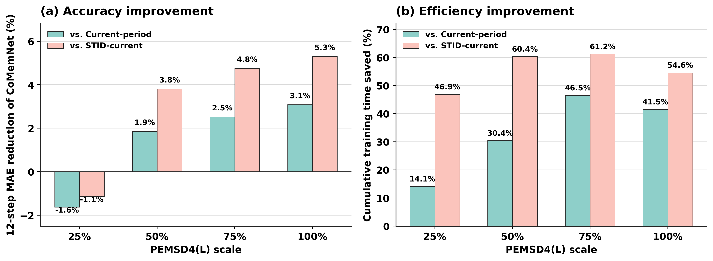
Relative percentage advantage over current-period retraining increases as the evolving PEMS D4 network scales.
Additional revision experiments quantify the update budget, temporal-memory aggregation, distribution shifts, and controlled update-policy choices.
Selected-node count and 12-step MAE across evolving periods. The operating point used by CoMemNet is highlighted.
| ρ | 2012 | 2014 | 2015 | 2017 |
|---|---|---|---|---|
| 0 | 182 / 12.76 | 151 / 14.07 | 65 / 16.50 | 60 / 18.78 |
| 0.03 | 246 / 12.68 | 210 / 14.05 | 92 / 14.78 | 130 / 14.89 |
| 0.05 · CoMemNet | 279 / 12.58 | 263 / 13.95 | 130 / 14.41 | 192 / 14.90 |
| 0.10 | 360 / 12.48 | 379 / 13.64 | 245 / 14.11 | 338 / 14.44 |
| 0.15 | 407 / 12.52 | 445 / 13.59 | 345 / 14.01 | 406 / 14.26 |
Temporal-memory aggregation remains stable around Kmem=12.
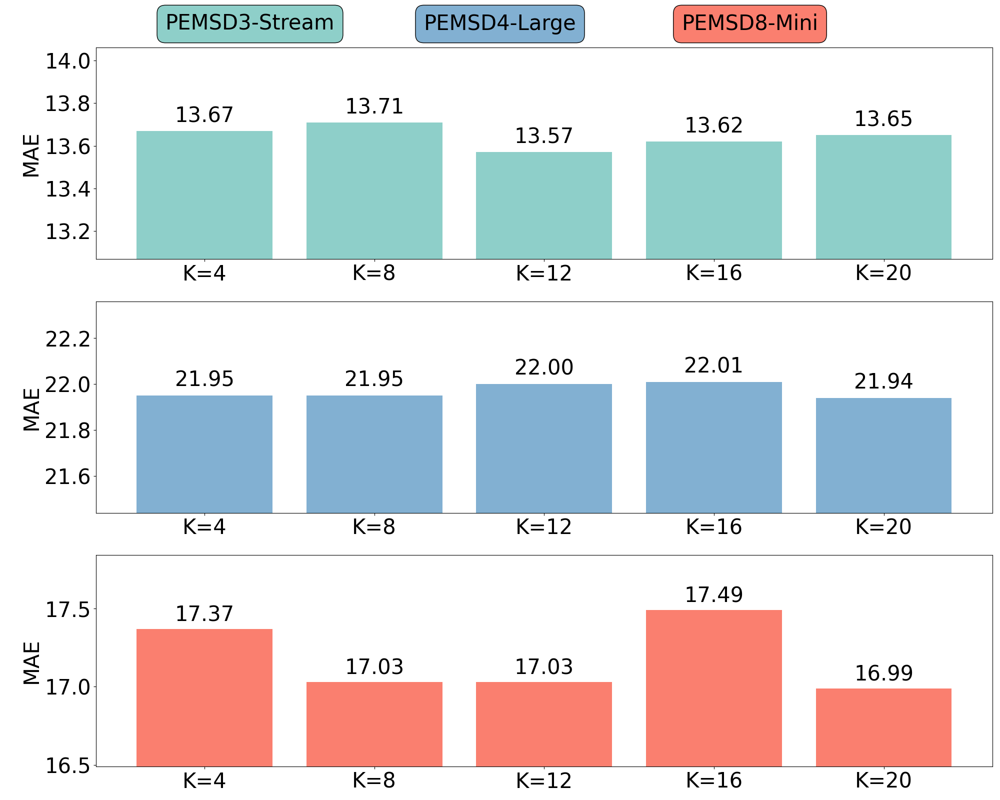
The controlled study compares whether a bounded subset alone is sufficient (Random), whether recent error or recency explains selection, alternative feature distances (L2 / KL / JS / MMD), target branches and momenta, and selected-only versus 1/2/3-hop update neighborhoods.
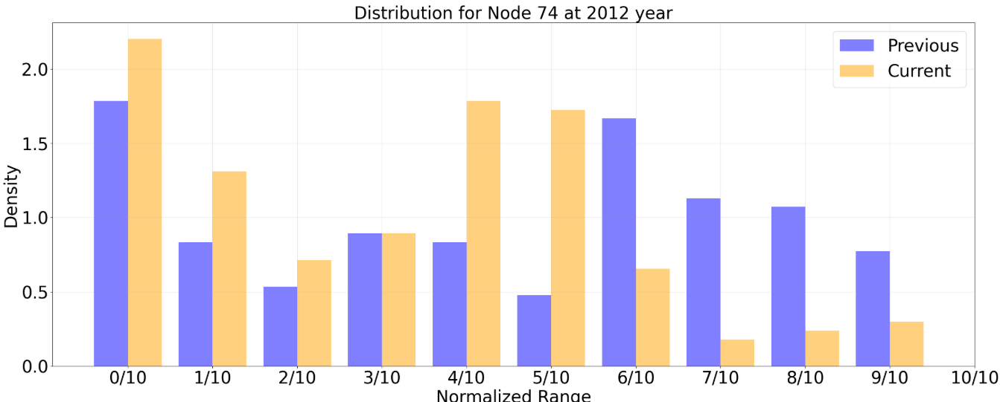
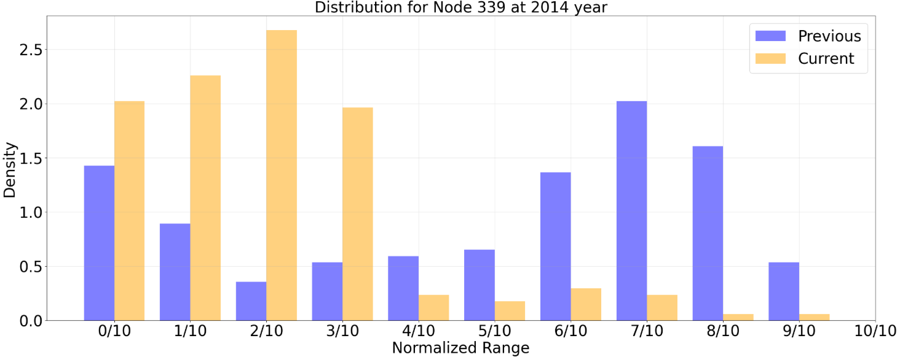
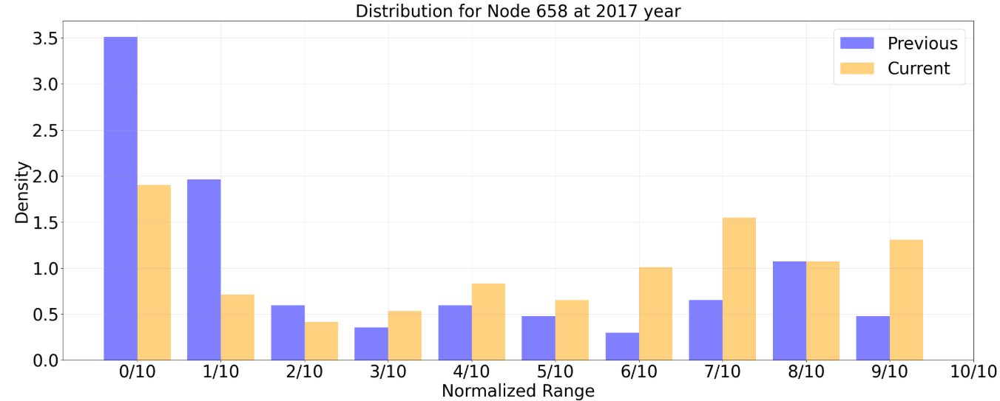
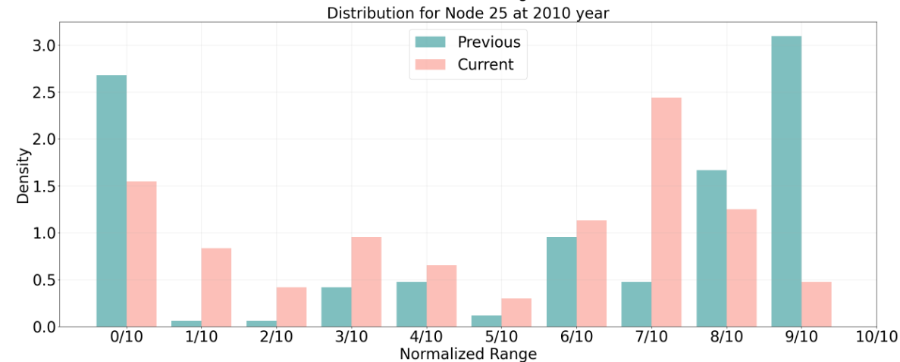
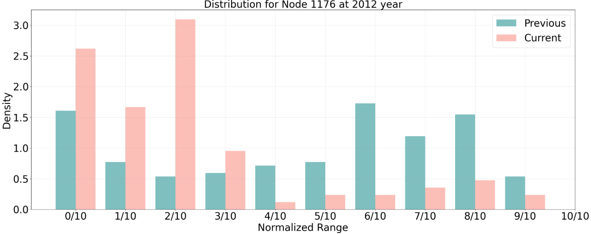
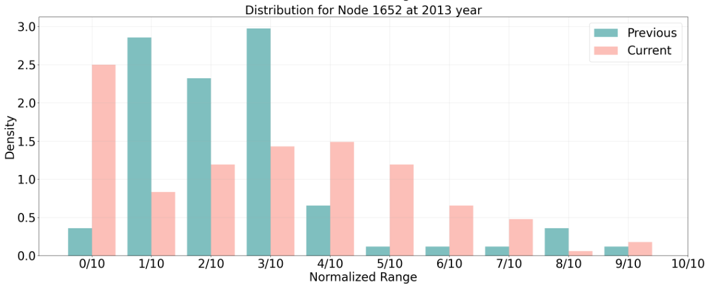
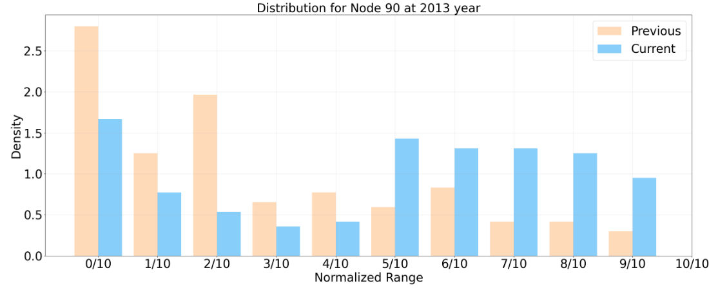
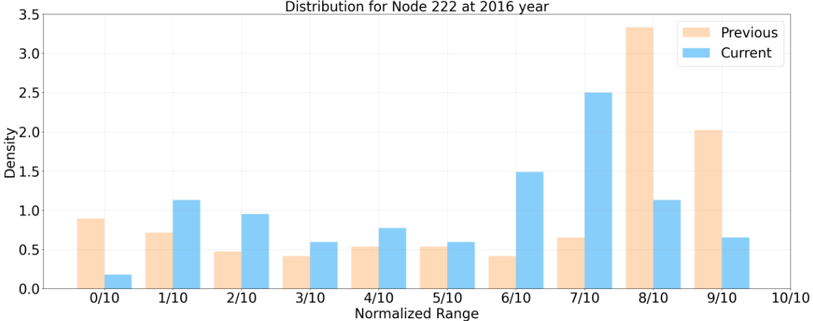
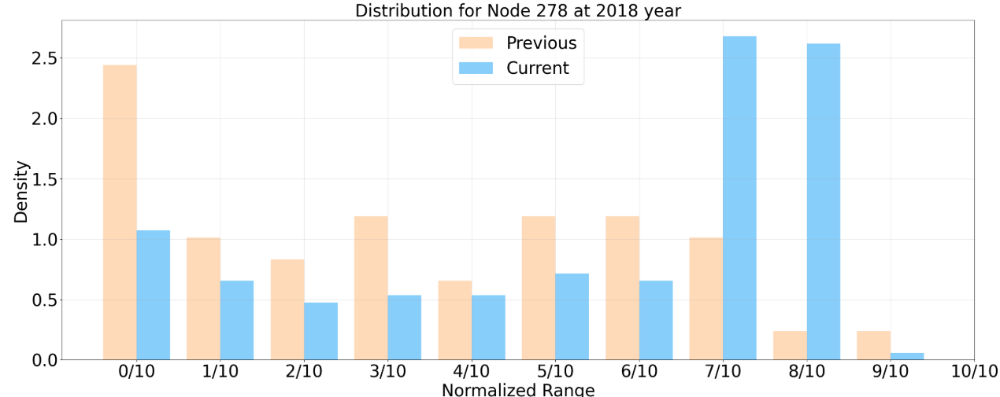
Interactive schematic anchored to PEMSD3(S), 2011–2017. Its yearly periods and selected-update counts follow the paper; node positions and links are illustrative rather than the released raw sensor topology.